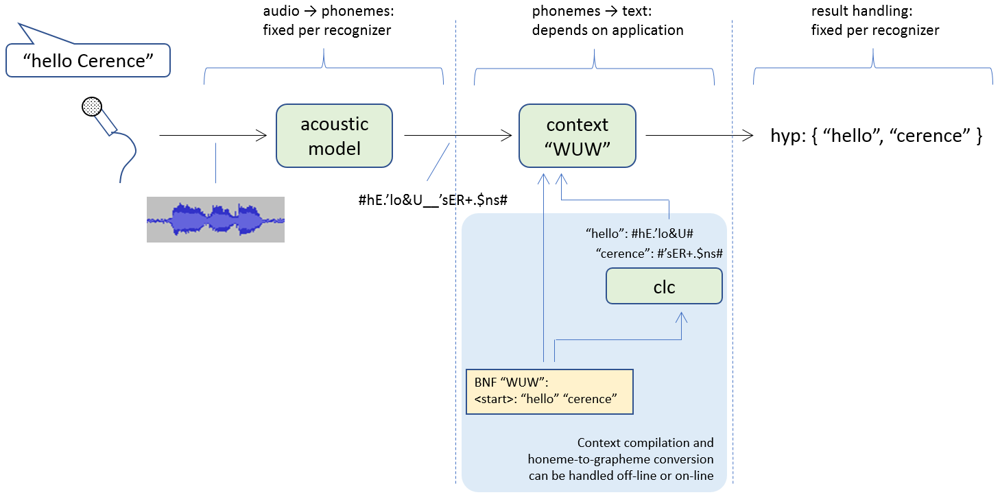

Applications
In section High-level description, we said that an ASR application is a description of a phase during a recognition session, where a “phase” is a time period where the recognizer is listening for a particular class of utterances, like a wake-up word or a command. Here we take this further, and deconstruct an ASR application setup in its constituent parts.
An ASR “application” can be seen as a task description for the recognizer. It may contain a several different things:
a description of the search space:
- which context(s) to use;
- (optionally) which language model(s) to use with the contexts;
- if several contexts are to be used, it should be specified if they should be merged, or if they will be used as host and guest contexts;
- if a setup with host and guest contexts is to be used, then the configuration should explain which guest context goes into which host context’s slots;
- if dynamically generated guest contexts are to be used, the configuration should link the corresponding slots to the dynamic content consumers that will provide the guest contexts.
(optional) description of the NLU component:
in addition to an ASR setup, an application can contain an NLU setup. If applicable, the configuration should specify which NLU processor to use, and the setup for it.
(optional) Settings for ASR parameters relating to the contexts
(More info on setting parameters: Setting parameters for recognizers, ASR applications, search)
There may be several applications configured at the same time in a recognizer, and several of them can be active at the same time as well. A complete description of the configuration options for applications can be found here: Application Configuration Options.
Many of these items are usually defined in an applications.json
configuration file. As with other configuration tasks, also in this
case the determination of specific configuration values can be delayed
to run-time. The vh_callback mechanism can be used to retrieve
values for specific keys at runtime. (See Callbacks Configuration Options for more info.)
Applications that are described in the JSON configuration are loaded
when Cerence ASR loads its configuration files. Applications that are
configured by using the API, should also be fully set up before
nuance_asr5_IRecognizer_start is called to start the recognition
process.
In addition, just before a recognition is started, the initial
applications must be activated. This is done by calling
<AsrManager>.setApplications(...), with a list of application names.
The image below illustrates broadly the stages that a “simple” recognition goes through, starting from audio capture and ending with one or more ASR hypotheses.
In the first stage, the audio stream is converted into a phoneme stream, using the acoustic model for the target language. This stage works the same for any utterances, both the ones that the system might need to recognize, and all others as well.
In the second stage, the phoneme stream from the first stage is continuously matched to the utterances defined in the context, to detect whether any of them appears in the stream. It is important to note, here, that the construction of contexts, whether BNF or SLM, starts from written representations of words, i.e. not phonemes. An important part of the compilation process of contexts is to convert these written representations into phonemes. From these phoneme strings a model is constructed which will match the phoneme stream from first stage which the utterances that are to be recognized. The second step of stage 2 is then to re-convert a matched stream of phonemes into their written representations, which can then be incorporated in a recognition hypothesis.
In the third part, hypotheses from the second stage are handled (and also events, warnings and errors). This is the same for all hypotheses that come out of stage 2.
{kind=link}
The architecture of a Cerence ASR recognition setup reflects the fact that stage 2 is specific for the utterances to be recognized at a specific point in time, wheras stages 1 and 3 remain the same throughout the recognition session: stage 2 is extracted into “ASR applications”, and the Cerence ASR API allows easy activation and deactivation of ASR applications, depending on the utterances that the system should look for at a specific time during the recognition session.
Below, we first discuss recognizers, and after that we look at Applications.
Recognizers
The static parts of a recognition setup are collected in
Recognizer configurations. This includes, for example, the
acoustic model. A Cerence ASR recognizer is configured with a specific
acoustic model, and this does not change throughout a recognition
session. The same is true for the code that handles the output of the
Cerence ASR recognizer: event messages, warnings, errors, and actual
recognition results. This code stays the same during a recognition
session, and is configured, using a RecognizerListener, on the
recognizer. More information on recognizer configuration options can
be found here: Recognizer Configuration Options. The
recognition results that will be handed to the onResult callback
will always be in JSON format, but the structure will depend on the
result type (ASR, NLU, cloud, etc.). More
information on result contents can be found here:
ASR results and NLU results.
Configuration
A basic recognizer configuration looks like this (typically in recognizer.json):
{
"version": "VoConHigh 5.0",
"recognizer": [{
"name": "rec",
"asr_engine": {
"language": [{
"acmod": {
"file_name": "acmod6_6000_enu_gen_car_f16_v1_0_1.dat"
}
}],
"vocon_parameters": {
"...": "..."
}
}
}]
}
This recognizer has a simple configuration for its ASR engine: only
the acoustic model file is configured. In this case, the file is
referenced statically, i.e. the configuration is fixed. (Note that the
acoustic model file will be loaded from the path configured in
asr_paths.json using the acmod key (see ASR paths) You can also have Cerence ASR resolve the file name
dynamically, using the vh_callback mechanism (see
Dynamic configuration at runtime).
In addition to the acoustic model, it is also possible to specify
ASR parameters, specifically those with the LH_ENGINE_PARAM
prefix. These parameters apply to internal components of the
recognizer. The full specification of keys and parameters that can be
set on a recognizer is here: IRecognizerConfig - The configuration of Recognizer.
Audio
A recognizer is an audio module: it consumes audio, and is supposed to be configured at the end of an audio chain. It will receive the audio stream, process it and return results based on this stream. The recognizer should be included in all relevant audio paths, just like other audio modules. They are referenced by name:
{
"version" : "AudioMgr 1.0",
"audio_scenario": [{
"name": "defaultScenario",
"audiopaths": [ ["file", "rec"] ]
}]
}
See section Audio setup and configuration for more information on audio scenarios, and audio setup in general.
Recognizer listener
A recognizer listener provides the way for recognizers to give feedback on the recognition process to the system. As shown in the figure above, the recognizer listener is created as a separate entity, and passed to the recognizer when it is created.
There are 2 steps to setting up a recognizer listener. First of all,
a set of callback functions need to be implemented. There are 4 callback
functions: onEvent, onResult, onWarning and
onError. After implementation of the functions, a vtable with
pointers to these implementations is created, and from this vtable
a recognizer listener is created that can be provided to the recognizer.
Section Listeners goes into more detail about listeners.
The onWarning and onError callbacks return an error code in
addition to a message string; more information is here:
group___recognizer_error.html.
The onEvent callback will be called each time the recognizer
produces an event.
See here for more information on which events can occur: group___recog_event.html
You can influence the number of SPEECH_DETECTED and
SILENCE_DETECTED events somewhat using the speech_events key
in the asr_event section of the recognizer configuration (see
IRecognizerConfig - The configuration of Recognizer.).
The onResult callback is called for each result that the
recognizer produces. All results are passed to the onResult
callback. The callback itself can decide whether to process a result
or not. If you are e.g. sure that an NLU result will always be
produced, you can decide to ignore the ASR result on which the NLU
result is based. The onResult callback receives the type of result
in the resultType parameter (see
group___result_type.html)
and whether the result is a final or a partial result. The result
itself is a string, and will always be in JSON format.
Applications
The variable parts of the configuration are collected in
Application configurations. An application contains a description
of the phrases that are to be recognized. Such a description will
contain Cerence ASR contexts, any links between them (such as which guest
context will fill a slot in a host context), ASR parameters, and it
can contain an NLU configuration as well. ASR contexts may be
present on the file system as .fcf-files, or created at run-time
by dynamic content consumers (See Dynamic Content Consumers, and
Dynamic Content Consumer Configuration). Normally applications
are configured using JSON; conventionally, these applications reside
in the applications.json file in the Cerence ASR configuration
directory.
It should be noted that “variable” in this context does not mean that the actual applications change, but rather that the application configuration of a recognizer is easily modified. There is an easy-to-use mechanism to “swap out” the variable configuration parts in a Cerence ASR recognizer. While the static parts (like the acoustic model) remain the same during a recognition session, it is very easy to activate and deactivate applications. This makes it possible to load or unload potentially very complex context configurations onto or from the recognizer, simply by using a single command, and referring to the configurations by name.
Generally, an ASR application is declared like this:
{
"version": "VoConHigh 5.0",
"application": [{
"name": "...",
"input": [{
"type": "<input_type>",
"<input_type>": {
"..." : "..."
},
"post_processor": {
"..." : "..."
},
"nlu": {
"type": "<nlu_type>",
"<nlu_type>": {
"..." : "..."
}
}
}]
}]
}
Applications are named; this name is used for activating applications
(<AsrManager>.setApplications(...)). The input key describes
the configuration of the application.
An application’s configuration can consists of several stages. The
first stage (referred to by type) is always there, and can be of
several types: asr denotes the “classic” embedded Cerence ASR
recognizer. Type cloud denotes the remote recognizer in the
Cerence cloud (see Remote applications)
The first stage, which produces “initial” results, can optionally be
followed by two more stages: an NLU stage (NLU applications),
and a post-processor. NLU stages are currently always of type
sem3. There is currently also one post-processor type, for VDE
(Voice Destination Entry).
In general, any results produced by any of the stages are returned to
the system’s onResult callback. This means that, for a
post-processor or NLU result, the callback will get both the original
ASR (or cloud) result, and the processed version of it.
Search spaces
Search spaces are an important and extensive subject. They are covered in their own section: Search spaces.
NLU
The NLU (natural language understanding) block of an ASR application contains components that do postprocessing on “plain” ASR results, to extract semantic information such as the user’s intent from the plain ASR result.
Currently, “SEM3” is the only type of NLU processing buffer that can be used with Cerence ASR. SEM3 buffers can be constructed from semantic information that is included in the BNF grammar (actually “BNF+SAM”). The semantic information is ignored when a “normal” context compilation is done. A specific SEM3 compiler extracts the semantic information, and prepares the buffer for use in SEM3 NLU applications.
"nlu": [{
"name": "SEM3_MUSIC_SIMPLE",
"type": "sem3",
"sem3": {
"app": {
"name": "MUSIC_APP",
"file_name": "music_simple_v5.s3c"
}
}
}
]
ITN
An example of a SEM3 NLU module, is the ITN module included with the messaging data pack for Cerence ASR. ITN, or Inverse Text Normalization, is a SEM3 module that takes an ASR result as input, and converts the word sequence produced by the ASR into a formatted written text. During this formatting, entities such as numbers, addresses, times, dates, … are rendered as in standard written documents. For instance, a number is rendered as 125 instead of one hundred twenty five. Also the Plato tags are removed.
As example, consider the following ASR result, and the corresponding result after it was post-processed by the ITN component:
| ASR | 8286 | sorry I\pronoun know I\pronoun said I\pronoun meet you at the restaurant at five thirty but I'm going to be about fifteen minutes late
| ITN | n/a | sorry I know I said I meet you at the restaurant at 5:30 but I'm going to be about 15 minutes late
- the semantic tags pronoun have been removed.
- the word sequence “five thirthy” has been formatted as a time indication: “5:30”.
- the word “fifteen” has been replaced by the number “15”.
Post-processors
Results can be processed by optional, post-processor libraries.
A postprocessor must be declared inside the ASR manager, in the
plugin block:
"asr_manager": [{
"name": "asr",
"plugin": {
"post_processor": [{
"name": "vderpp5_plugin"
}]
},
"liquid_config_file_name": "liquid_config.json"
}]
Its configuration is declared as part of the application where it will be active:
"application": [{
"name": "VDE_RPP_APP",
"input": [{
"uses": "VDE_INPUT"
}],
"post_processor": {
"name": "VDERPP_PP",
"source": [
"UDEPS"
],
"library_name": "vderpp5_plugin",
"config": {
"sortPerStreet": "1",
"partial_results": "0",
"input_acceptance_threshold": "50",
"...": "..."
}
}
}]
The value of the source key is a JSON array containing context
names. The postprocessor will be applied to results originating from
these contexts.
Setting parameters for recognizers, ASR applications, search
ASR parameter values can be set in the following ways:
- For recognizers, use the JSON configuration (see
this recognizer configuration example,
vocon_parametersblock) - For search, use the JSON configuration (see
this ASR application configuration example,
vocon_parametersblock). Alternatively, parameter settings can be included in the compiled context files. - For ASR applications, use the JSON configuration.
A JSON configuration block is used for statically specifying ASR parameters via JSON configuration, like this:
"vocon_parameters" : {
"LH_ENGINE_PARAM_SPEECHDETECTOR_ABSOLUTE_THRESHOLD" : 800
}
In addition, Cerence ASR supports setting parameters at runtime via callbacks. These callbacks have to be configured in the JSON configuration files as well. This procedure is described in detail here: Dynamic configuration at runtime.
The parameters that can be set per component are documented in the respective IVPxxx members (see links above).
Additionally, ASR parameters can be specified through their hexadecimal key. For example:
"vocon_parameters" : {
"0x33a14f52" : 64000
}
Nesting of the parameters
The same parameter can be set on the recognizer, application or search level.
If the parameter is set on the recognizer level then it will be applied for all objects which accept this parameter. The value of the same parameter can be overwritten by redefining it on a lower level.
Remote applications
Remote applications are described in detail in a dedicated section: Remote applications.